With a long day ahead and a lot of ground to cover, we began our journey at 8 a.m.—our first official day on the North Island. Compared to the South, this side of New Zealand felt more inhabited, though still charmingly quiet by Indian standards. Auckland, being a bustling city, made the contrast even sharper after 12 days of serene South Island scenery.
We eased into the usual travel rhythm: protein bar breakfast, frequent photo stops, and a lunch break along the way. The North Island greeted us with sweeping green hills and lush valleys—but it was the weather that truly put on a show. We drove through sun, wind, rain, hailstorm, and sunshine again, all in a single stretch. A dramatic prelude to our arrival at Cape Reinga.
Standing there, where the Pacific Ocean meets the Tasman Sea, felt surreal. The lighthouse—iconic and still—marked more than a geographic point. According to Māori tradition, it’s where souls begin their final journey. And in that moment, it truly felt sacred.
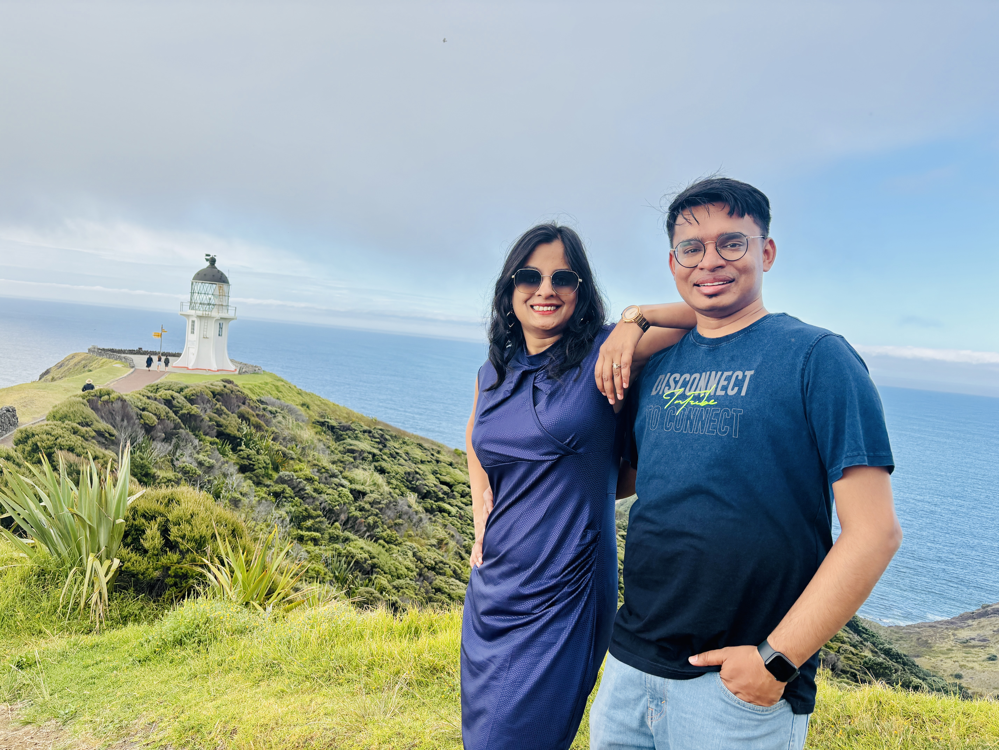
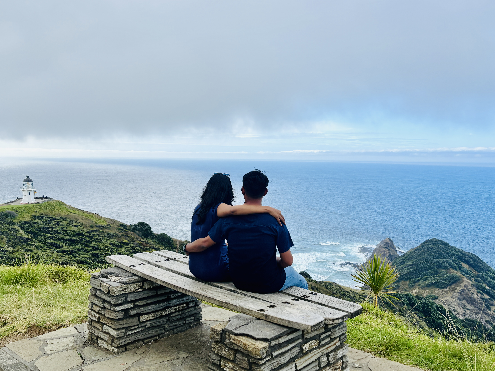
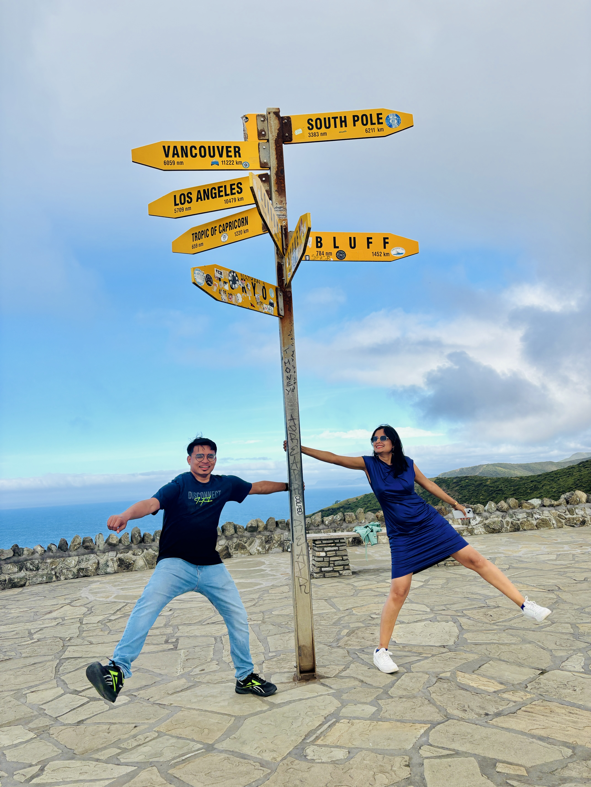
Though we skipped the nearby hikes to stay on track, making the journey here was absolutely worth it. Harshit carried the weight of the day behind the wheel—nearly 10 to 11 hours of continuous driving. He never said a word about being exhausted, but I could see it. He always steps up quietly, without complaint.
We reached Paihia as the sky turned dark and rain returned. It was Harshit’s first time driving in the dark on this trip, and while I’m sure it wasn’t easy, he never let it show. By the time we reached the hostel, we were completely drained. Still, we pulled ourselves together, cooked dinner, and joined a lively group in the kitchen. Over shared meals and stories, we listened to others’ travel plans and swapped experiences. One fellow traveler stood out—he was collecting favorite singers from everyone’s home country, building a playlist to soundtrack his journey across New Zealand. It was such a simple but beautiful idea.
The space buzzed with easy laughter, the strum of a guitar, wisps of weed, and spontaneous conversations. The dining area felt like a crossroad of stories—each traveler carrying a little universe of their own. I remember lying down and falling asleep almost instantly—my last waking thought a quiet mix of pride, gratitude, and awe.
Hostel Reflections, PaihiaMust-Visit Places in Paihia / Bay of Islands
If you ever find yourself in Paihia, here are some incredible spots to explore:
- Waitangi Treaty Grounds – A deeply meaningful historic site marking New Zealand’s founding.
- Paihia Wharf – Great for coffee on wheels and catching ferries to nearby islands.
- Haruru Falls – A short drive or kayak to this photogenic, horseshoe-shaped waterfall.
- Russell – A ferry ride away, this old capital offers seaside charm and café culture.
- Cape Reinga (via road trip) – Northernmost tip with awe-inspiring ocean views and Māori significance.
- Scenic Drive from Auckland to Cape Reinga – A journey in itself through rolling hills, coastal bends, and shifting skies.
Day 2: Paihia ➔ Auckland – Coldplay Dreams & Rainy Roads
total distance covered = 250 km; total time taken = ~3hr
This was easily one of the most thrilling days of Harshit’s life. His list of dreams isn’t long, but every time we tick one off, I swear I feel even happier than he does. This was the day we’d built the whole trip around—Coldplay concert day.
The drive from Paihia to Auckland was meant to take about three hours but rain and a blocked road added more stress than expected. We barely made it on time—just enough for a quick Indian lunch, a moment to freshen up at our apartment (a charming white house with a garden), and then it was off to the stadium.
Let me backtrack a little. The morning began with a visit to the historic Māori Treaty Grounds—rich in culture and meaning. We skipped Lake Paihia since time was tight, but we did stop for coffee from a heartwarming little “Coffee on Wheels” van, run by an uncle who’d turned his passion for being a barista into a mobile café. His joy was infectious.
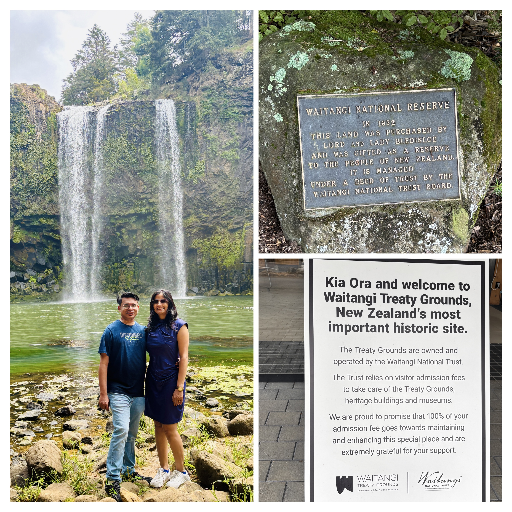
After that, we took one stop to Whangarei Falls along the way and then straight to Auckland and stopped for lunch at an Indian restaurant. I wasn’t feeling the best—some period pain was setting in—so all I really wanted was a comforting meal and a moment to rest. Our apartment turned out to be a pleasant surprise: a spacious white house with a garden, peaceful and inviting. The owner wasn’t around, which gave us a little more breathing room to settle in.
We got ready and made our way to the stadium, but a drizzle and closed stadium roads made parking an ordeal. Still, we were determined. Just as we reached the venue, a fresh wave of panic hit: we hadn’t downloaded the proper tickets, and the ones we had didn’t include the gate number. A security guard looked at our version and casually warned us that they might be fake. My heart sank. I remember thinking, this can't be happening. The entire trip had been building up to this moment.
After some frantic rechecking (and praying for the internet to cooperate), we finally retrieved the real tickets and were let in. Just like that, the weight lifted.
And then… magic. The stadium, the energy, the lights—a full-body experience. It was raining lightly, but thankfully our seats were under cover, with a far view that still gave us a perfect glimpse of the stage and backstage. We grabbed burgers and settled in.
Eden Park Stadium, AucklandThe concert spanned three unforgettable hours—starting with 90 minutes of powerful openers. Emmanuel Kelly, the differently abled pop star, radiated heart and resilience, while Ayra Starr, the soulful Nigerian singer, brought an infectious energy that had the crowd moving even through the drizzle. And then came 90 minutes of Coldplay magic —pure, soaring, luminous. Every lyric, every light, every beat felt like it was stitched directly into the sky. The rain stopped just as Chris and the band took the stage. There was something deeply moving about seeing them live for the first time. They brought up local artists, performing “We Pray” in both English and Māori—a moment that still gives me chills.
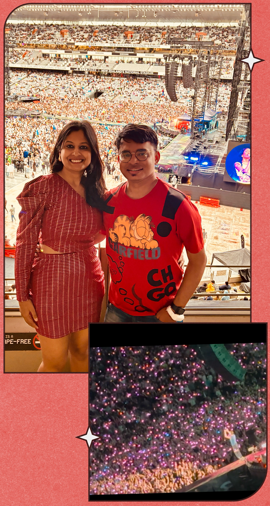
Time vanished in that stadium. We laughed, sang along, cried a little. And when it ended, we noticed something else: the calm. No pushing, no yelling, no traffic chaos. People just made their way home, still carrying the joy of those last few hours.
We reached the apartment and posted a flood of videos to Instagram. Harshit wore the widest smile—I’ve rarely seen him that radiant. Watching him enjoy this dream fulfilled… it hit me differently. We fell asleep with our hearts full and faces still lit up.
Must-Visit Places in Auckland
If you ever find yourself in Auckland, here are some incredible spots to explore:
- Viaduct Harbour – Perfect for a sunset stroll, gelato in hand, and a final breath of city charm.
- Eden Park Stadium – Where unforgettable concerts like Coldplay come alive in sound and light.
- Auckland Domain & Wintergardens – A peaceful escape with glasshouses and botanical beauty.
- Mount Eden – Climb or drive up for panoramic views over the city and harbor.
- Newmarket & Ponsonby – Trendy hubs for shopping, cafés, and local flair.
- Auckland War Memorial Museum – An insightful collection of Māori history and cultural heritage.
- Waitākere Ranges (for day trippers) – Rainforests and black-sand beaches just outside the city.
Day 3: Auckland ➔ Tauranga ➔ Rotorua – Kane Vibes & Māori Magic
total distance covered = 300 km; total time taken = ~3.5hr
The next morning brought a lovely surprise—our host turned out to be an Indian woman from Mumbai, now living in New Zealand with her European partner. She’d recently bought the house, and over a heartfelt breakfast conversation, we swapped stories of our experiences—hers spanning 14 years in New Zealand, ours still unfolding one memory at a time.
I wasn’t feeling too great, courtesy of my period, but Harshit, ever thoughtful, offered to do one more stretch drive. This time, it was just for me—to Tauranga—for the sheer joy of indulging my fan-girl spirit for Kane Williamson. The weather, ever moody, followed us with rain again. I mostly dozed off during the drive while Harshit steered us through winding roads and scattered showers.
Tauranga didn’t disappoint—another charming town wrapped in coastal calm. We treated ourselves to a mouth-watering lunch at Lone Star Café, a cozy spot that felt like just the recharge we needed. Then we made our way to Mount Maunganui, an extinct volcano and sacred Māori site, where the ocean-view trails offered a serene moment of reflection before the next leg of our journey. From there, we continued toward Rotorua, where the cultural heart of New Zealand was ready to welcome us with stories, steam, and song.
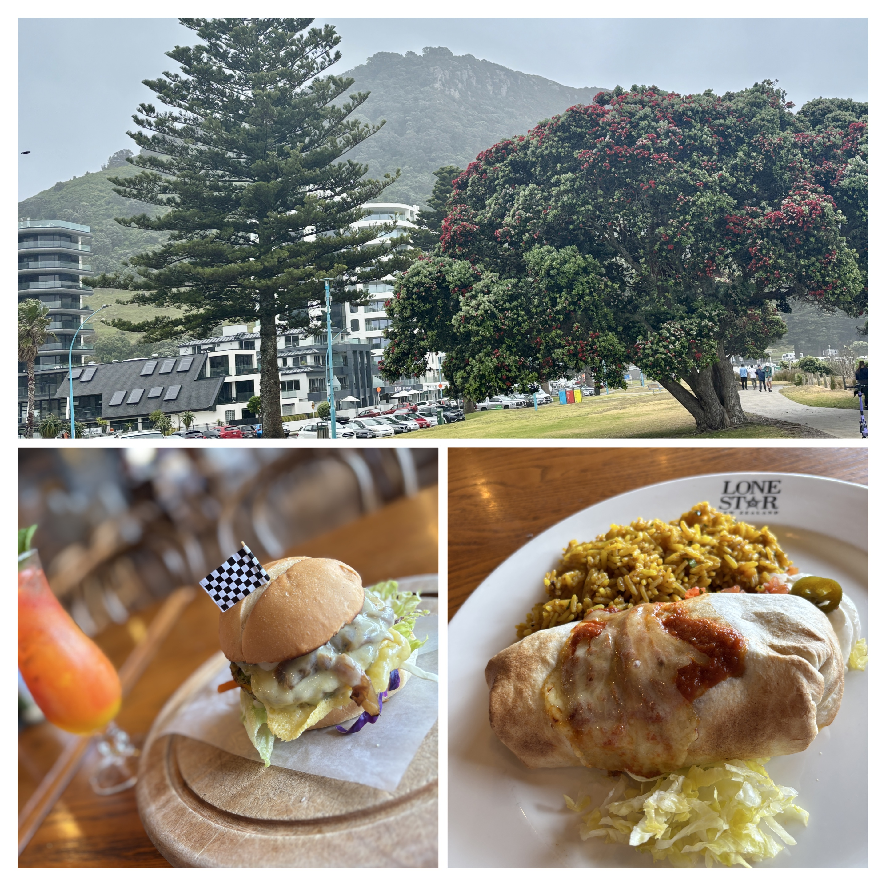
Rain continued to walk beside us as we checked into our hostel, where we were greeted—once again—by an Indian receptionist. A comforting familiarity in a foreign land.
After a short rest, we were picked up by a nearby bus for our evening experience: a Māori cultural evening filled with stories, food, language, and dance. We had our doubts about the veg options, but to our surprise, there were plenty. The show guided us through their traditional way of life—ancient war tactics, carving styles, song, and, of course, the famous Haka dance. It was immersive and powerful, and we felt genuinely honored to be part of it.
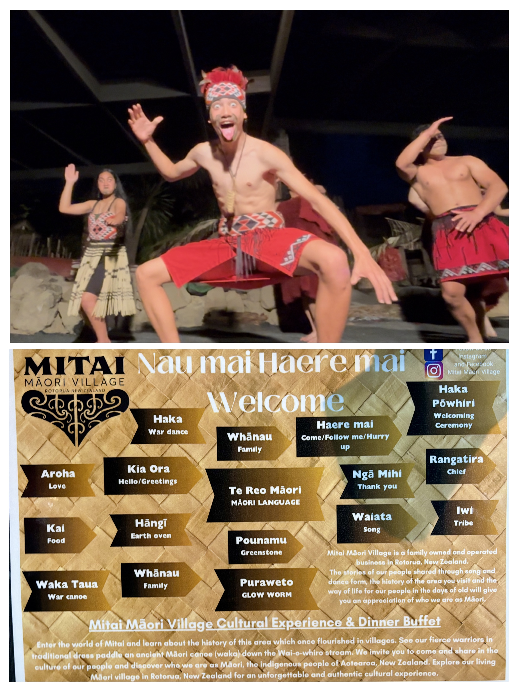
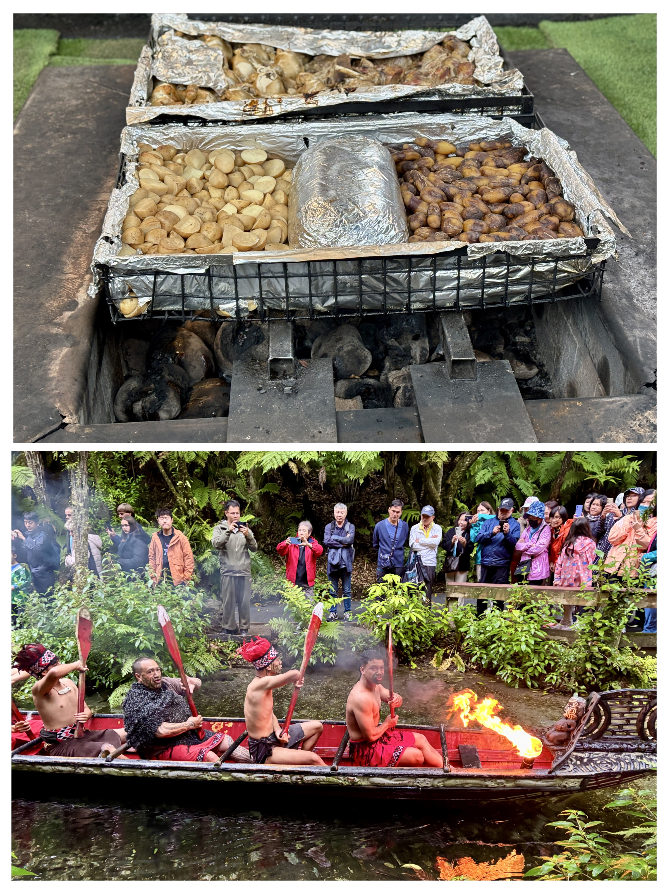
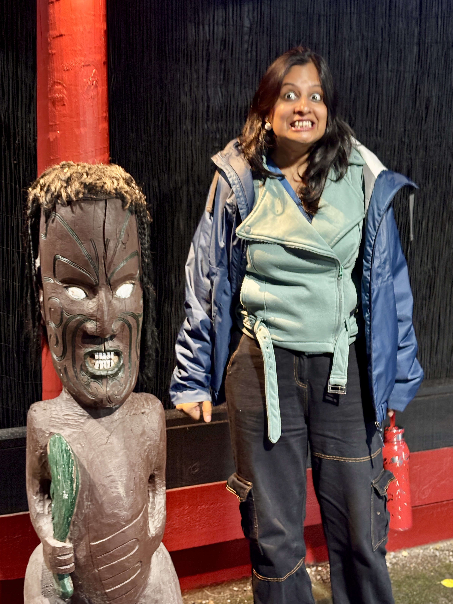
When the bus dropped us back at the hostel, we wound down with some quiet TV and drifted off, carrying both the drizzle and the drumbeats of the day into our dreams.
Must-Visit Places in Tauranga / Mount Maunganui
If you ever find yourself in Tauranga, here are some incredible spots to explore:
- Mount Maunganui – Hike to the summit for panoramic ocean views or unwind at the beach below.
- Pilot Bay & Marine Parade – A beautiful coastal stretch for relaxing walks and sea breezes.
- McLaren Falls Park – Waterfalls, glowworms at night, and peaceful picnic spots.
- Kaiate Falls – A local gem tucked into native bush with a series of cascading pools.
- Downtown Tauranga – Boutique cafés, galleries, and quiet city charm.
- Kane Williamson’s hometown spark – A nice extra touch for cricket fans!
Day 4: Rotorua – Ziplines, Mud Baths & Classic Slips
total distance covered = 70 km; total time taken = ~1hr
Another thrilling day on the North Island—this one packed with ziplines, volcanoes, and muddy laughter. I had booked a Canopy Tour, along with visits to a volcanic site and a sulphur mud bath. The canopy adventure began bright and early at 7:45 a.m., so we were up, dressed, and at their office by 7:30. It was drizzling—just enough to add a touch of forest magic without dampening the spirit.
Our group was small—just four of us, guided by two incredibly encouraging souls. As expected, I panicked at the first zipline. But with Harshit and the guides cheering me on, I stepped off that platform—and then there was no turning back. There were six ziplines in total, each more exhilarating than the last. Along the way, we learned about conservation efforts, native birds, and the delicate balance of the ecosystem. We spotted the Silver Fern, it is more than just a botanical wonder—it's a proud emblem of New Zealand identity. To the Māori, it symbolizes strength and guidance, especially under moonlight. Historically, its silvery-white fronds helped people navigate bush paths at night, and today it unites Kiwis as a national icon, seen on everything from sports jerseys to soldiers' memorials. I ended the tour not just with adrenaline, but a quiet sense of accomplishment for overcoming that initial fear. I owe that moment to Harshit and the guides.
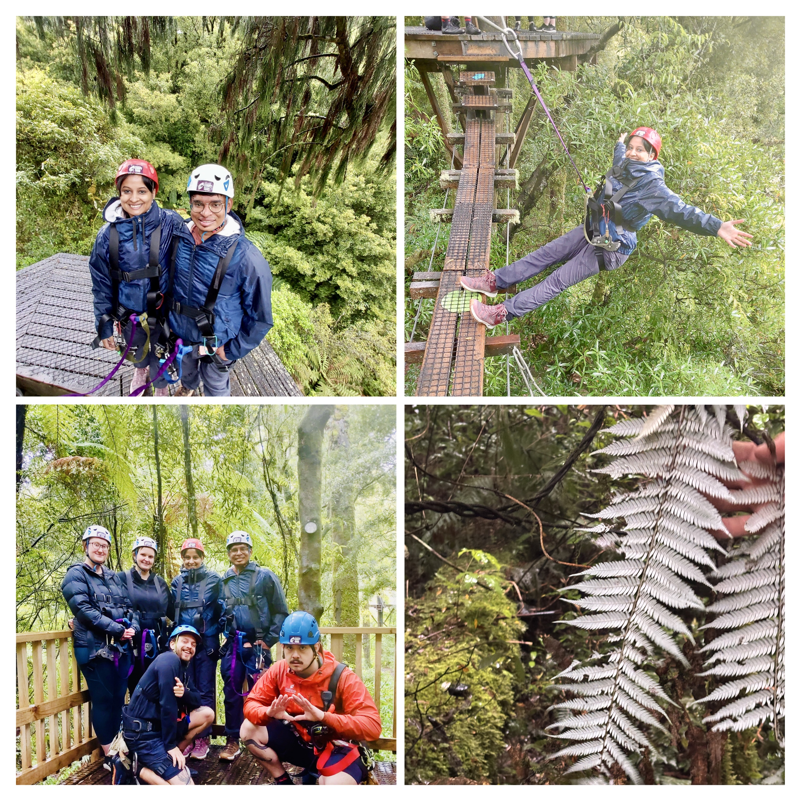
Next stop: Hell's Gate Geothermal Reserve, a volcano tour, where steaming geothermal features reminded us of the raw energy bubbling beneath New Zealand’s serene surface. And then it was time for the sulphur mud bath—therapeutic, earthy, and hilarious... especially because Harshit slipped, true to tradition. Honestly, I’m convinced a trip isn’t officially complete until Harshit has at least one dramatic tumble. We get to carve on wood in the thermal reserve.
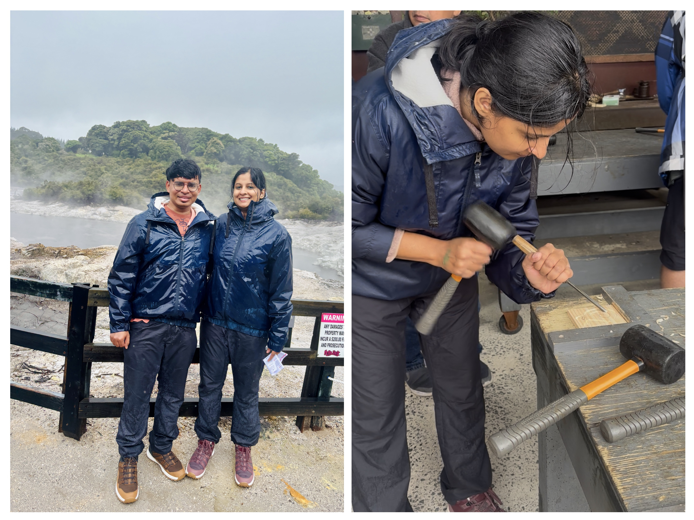
After braving the mist and rain all day, comfort food called. We headed to an Indian restaurant, roamed through Rotorua’s shops for a while, and finally returned to our cozy stay. A home-cooked dinner, some TV, and a long exhale wrapped up the day just right.
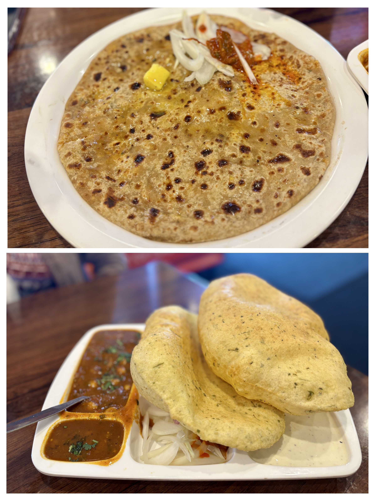
Must-Visit Places in Rotorua
If you ever find yourself in Rotorua, here are some incredible spots to explore:
- Rotorua Canopy Tours – Glide through native forests and learn about birdlife and conservation.
- Wai-O-Tapu Thermal Wonderland – Surreal geothermal colors and bubbling pools.
- Polynesian Spa – Lakeside hot pools perfect for unwinding tired muscles.
- Te Puia – A blend of geysers, Māori carving, cultural performances, and craft.
- Redwoods Treewalk – Suspended bridges among ancient trees, especially magical after dark.
- Hell’s Gate Mud Bath & Spa – Relaxing soak meets comic misadventure (cue: Harshit’s slip 😄).
- Māori Cultural Evening – A powerful blend of haka, history, storytelling, and shared meals.
Day 5: Rotorua ➔ Waitomo ➔ Auckland – Glowworms, Gelato & Goodbyes
total distance covered = 400 km; total time taken = ~5Hr
The final day of our journey arrived with clear skies—as if New Zealand itself had come out to say goodbye. With much ground to cover before our late-night flight (1am), we left Rotorua early and made our way to the Waitomo Glowworm Caves. Beneath the earth’s surface, we drifted through a galaxy of tiny lights—nature’s own constellation woven into stone. The history of the caves and the bioluminescence of the glowworms added a soft enchantment to our last adventure.
We stopped for lunch on the way, letting the day unfold without hurry. Back in Auckland, we wandered along the harbour, savoring one final gelato and wrapping up with a little chocolate shopping—souvenirs that could never quite match the sweetness of the memories.
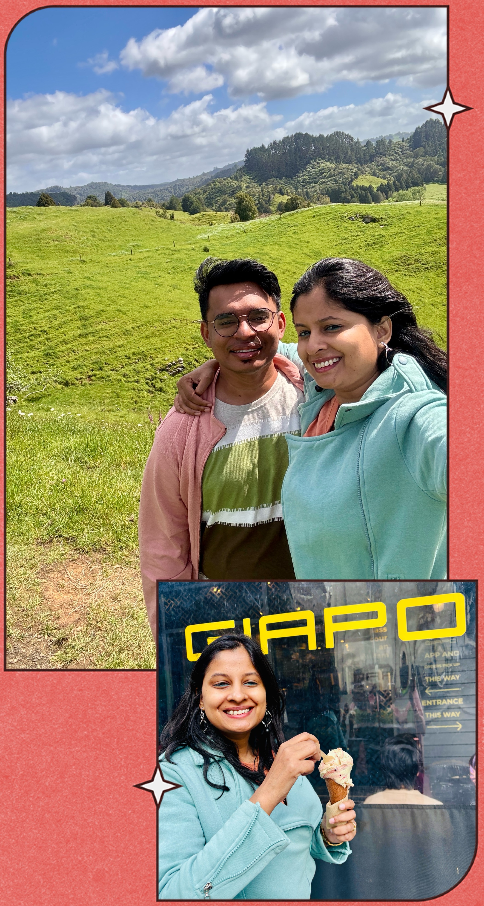
As always, there were rituals to close the chapter: we cleaned and returned our beloved car, that wheeled companion through every twist, drizzle, and glowing valley. The sun stayed with us until the end, a parting gift.
At the airport, we looked back on 16 days of wonder. It passed in a blink—but what a blink it was. I don’t know when we’ll return, but I know this: New Zealand doesn’t just make you fall in love with it—it spoils you for anywhere else.
Must-Visit Places in Waitomo
If you ever find yourself in Waitomo, here are some incredible spots to explore:
- Waitomo Glowworm Caves – Sail beneath a galaxy of bioluminescent magic.
- Ruakuri Cave – Spiraling limestone formations and ethereal cave walks.
- Black Water Rafting – For the thrill-seekers—tubing through underground rivers and caverns.
- Marokopa Falls – One of NZ’s most beautiful and accessible waterfalls.
- Mangapohue Natural Bridge – Limestone arch formed over centuries, best visited at twilight.
Summary of the North Island Road Trip
The North Island wasn’t just a geographical shift—it was a rhythm change. It asked more of us: longer drives, unpredictable skies, and choices made with heart over convenience. From the sacred stillness of Cape Reinga, where oceans kissed under a lighthouse and Māori legends breathed through the breeze, to Harshit driving 11 hours without a single complaint—every moment was stitched with silent strength.
Paihia wasn’t just a pitstop. It was late-night laughter in hostel kitchens, strangers swapping Spotify songs from their homelands, and that soft hum of camaraderie that only travelers understand. Then came Coldplay. A day so charged with emotion—from lost tickets and drizzled chaos to stadium lights and three golden hours of sound and soul. Watching Harshit beam as Chris Martin sang was the kind of joy that tugs behind your ribs.
Rotorua gave us its volcanic breath—steam, mud, haka drums, and stories that stretched centuries. You ziplined through misty forests despite your fear, stepped off trembling but landed flying. We slipped (well, he did), we giggled, we got mud on our skin and memories on our hearts. And all through it, rain became less of a hindrance and more of a signature.
The final drive led us underground into Waitomo’s starlit caves, followed by one last gelato by Auckland’s harbor. We handed back the car that had carried our snacks, our chaos, our silence, and our system of suitcases. The sun showed up for goodbye.
This wasn’t a holiday. It was a mosaic: of concert wristbands and café coffees, of Kane Williamson detours and hostel conversations, of moments unplanned and fears overcome. The North Island didn’t sweep us off our feet—it walked beside us, through rain and sun, teaching us presence, patience, and the beauty of holding space for the unexpected.
We arrived as travelers. We left a little softer, a little braver, and a lot more full.
Earthy Whispers, Earthy Winds
Join the conversation
Have a question, a tip, or a memory from the same place? Drop a comment below — no signup needed.